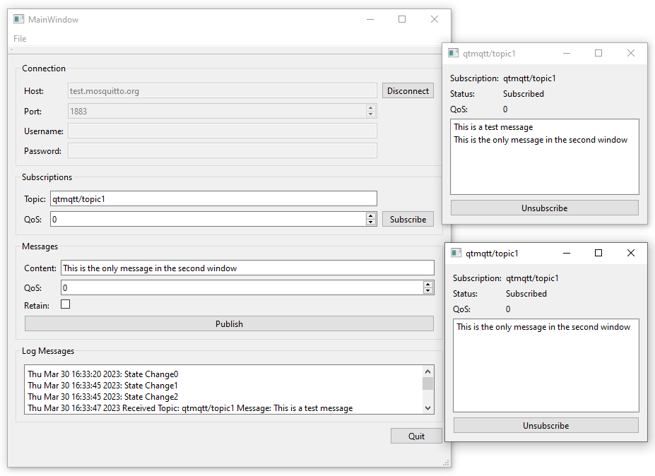

MQTT Subscriptions
Creating a application that communicates with an MQTT broker.

MQTT Subscriptions shows how to create an application that communicates with an MQTT broker. A new dialog opens for each subscription, where you can see the messages on the subscribed topics.
Creating a Client
We use the QMqttClient class to create an MQTT client and to set the broker host name and port to use for the connection:
m_client = new QMqttClient(this);
m_client->setHostname(ui->lineEditHost->text());
m_client->setPort(static_cast<quint16>(ui->spinBoxPort->value()));
Subscribing to Topics
When users subscribe to topics in the client, a new subscription object is created:
void MainWindow::on_buttonSubscribe_clicked() { auto subscription = m_client->subscribe(ui->lineEditTopic->text(), static_cast<quint8>(ui->spinQoS->text().toUInt())); if (!subscription) { QMessageBox::critical(this, QLatin1String("Error"), QLatin1String("Could not subscribe. Is there a valid connection?")); return; } auto subWindow = new SubscriptionWindow(subscription); subWindow->setWindowTitle(subscription->topic().filter()); subWindow->show(); }
We use the QMqttSubscription class to store the topic, state, and QoS level of a subscription:
SubscriptionWindow::SubscriptionWindow(QMqttSubscription *sub, QWidget *parent) : QWidget(parent), ui(new Ui::SubscriptionWindow), m_sub(sub) { ui->setupUi(this); ui->labelSub->setText(m_sub->topic().filter()); ui->labelQoS->setText(QString::number(m_sub->qos())); updateStatus(m_sub->state()); connect(m_sub, &QMqttSubscription::messageReceived, this, &SubscriptionWindow::updateMessage); connect(m_sub, &QMqttSubscription::stateChanged, this, &SubscriptionWindow::updateStatus); connect(m_sub, &QMqttSubscription::qosChanged, [this](quint8 qos) { ui->labelQoS->setText(QString::number(qos)); }); connect(ui->pushButton, &QAbstractButton::clicked, m_sub, &QMqttSubscription::unsubscribe); }
The QoS level can be set separately for a message and for a subscription. The QoS level set for a subscription determines the minimum QoS level. If a message is sent with a higher QoS level, the broker increases the QoS of that message to the higher level. For example, if client A subscribed to topic with QoS 1, and client B publishes a message on the topic, with QoS 0, the broker will automatically increase the QoS of the message to 1. If client B publishes a message on the topic with the QoS 2, the broker will send it with QoS 2.
Receiving Messages
When the client receives a message, the QMqttMessage class is used to store the actual message payload:
void SubscriptionWindow::updateMessage(const QMqttMessage &msg) { ui->listWidget->addItem(msg.payload()); }
Files: